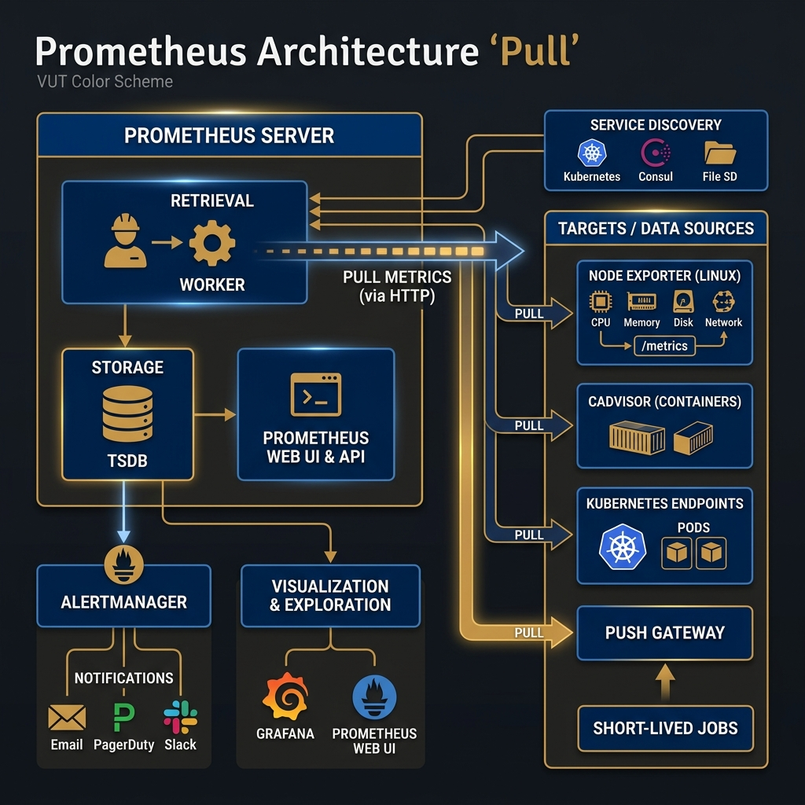
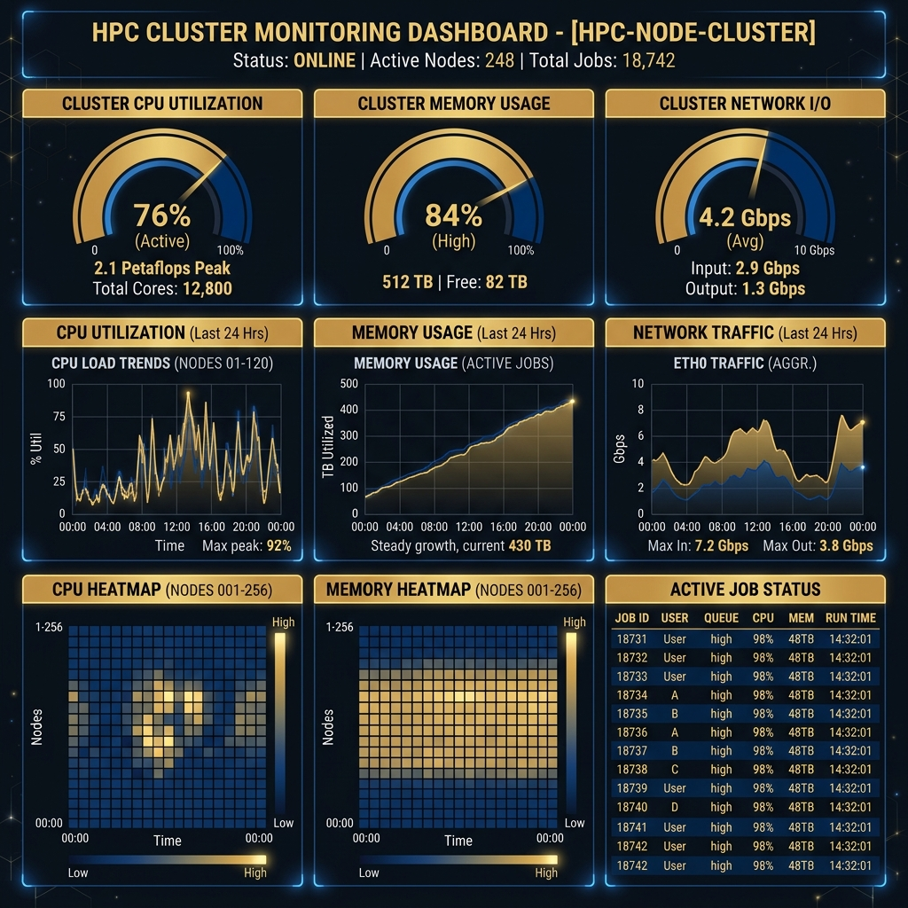

Cluster Monitoring
HPC & Cluster ComputingCluster Monitoring and Analytics
Course: Operating Systems 4 (HPC) Module: EIOSY4A Week: 11
Overview
A Supercomputer is a complex machine with thousands of moving parts. If a single fan fails, a node can overheat and shut down. If a user runs a broken script, they can flood the network and stall everyone else. Monitoring is the eyes and ears of the System Administrator. This week, we implement the modern standard for cloud and HPC monitoring: Prometheus and Grafana.
1. HPC System Administration
Before we install tools, we must understand the role of the System Administrator. An HPC site is not just hardware; it is a service.
1.1 The Administrator's Mandate
The primary goal of HPC System Administration is RAS:
- Reliability: The system works when needed.
- Availability: The percentage of time the system is up (Target: 99.9%).
- Serviceability: How easy it is to fix when it breaks.
1.2 System Life Cycle
The lifecycle of a supercomputer follows four clear phases. Installation (Weeks 1-2) involves the physical assembly and cabling. Configuration (Weeks 3-7) sets up the software stack, Scheduler, and Network overlays. The bulk of the machine's life is spent in Operation, which focuses on daily monitoring and user management. Finally, the system reaches Decommission, where data is migrated and hardware is retired.
1.3 Measuring System State
You cannot manage what you cannot measure. Administration requires tracking Workload to ensure schedulers are efficient and nodes are not idling wastefully. To predict when a cluster will become "saturated," we use the Utilization Law from queueing theory:
$$ U = \frac{\lambda}{\mu} $$
- $U$ (Utilization): The percentage of time the system is busy (0 to 1).
- $\lambda$ (Arrival Rate): The frequency at which new jobs are submitted to the queue.
- $\mu$ (Service Rate): The speed at which the cluster finishes jobs.
As $U$ approaches 1 (100%), the wait time in the queue grows exponentially. A well-managed cluster typically aims for a utilization of 80-90% to balance throughput with responsiveness. Modern administration moves away from legacy ad-hoc checks towards standardized tools like Prometheus to visualize these states over time.
2. The Philosophy of Monitoring
2.1 "Is it Up?" vs "How is it Running?"
Legacy monitoring systems like Nagios focused on binary states, simply asking "Is Node 1 Pingable?". Modern observability tools like Prometheus shift the focus to metrics over time, asking more complex questions such as "What is Node 1's CPU load compared to 10 minutes ago?".
2.2 Push vs Pull Architecture
Monitoring systems generally follow one of two data collection models. In a Push (Agent) model, nodes send data to the server. This carries a risk: if 1000 nodes push simultaneously, they can inadvertently DDoS the monitoring server. Conversely, a Pull (Scraping) model—used by Prometheus—has the server visit each node to request data. This creates a more stable system where the server controls the load; if it becomes busy, it simply scrapes less frequently.
3. Prometheus Architecture
Prometheus is a Time-Series Database (TSDB). Unlike a SQL database providing a snapshot of now, a TSDB is designed to track how values change over time. It specifically stores data as a stream of values associated with a timestamp.

Figure 11.1: The Prometheus Architecture. Note the "Pull" mechanism where the Server retrieves data from Exporters.3.1 The Core Components
The ecosystem consists of three main components:
-
The Exporters (The Agents): These are lightweight binaries running on your Compute Nodes. They don't "send" data; they simply expose a web page (e.g.,
http://node01:9100/metrics) displaying their current status. Common exporters include:node_exporter: Hardware OS metrics (CPU, RAM, Disk I/O).slurm_exporter: Scheduler metrics (Queue length, wait times).mysqld_exporter: Database performance metrics.
-
The Server (The Brain): This is the central process. It manages a Retrieval worker that wakes up every 15 seconds (the Scrape Interval), connects to the list of defined targets, reads their metrics page, and stores the data in its local TSDB.
- Reliability: Because the server initiates the connection (Pull), a crashed node simply results in a "time out" rather than crashing the monitoring system.
-
The Alertmanager (The Voice): Prometheus doesn't send emails. Instead, check rules (e.g.,
IF node_down > 5min) are evaluated. If true, an alert is pushed to the Alertmanager, which handles grouping (don't send 100 emails for 100 nodes) and routing (send criticals to PagerDuty, warnings to Slack).
4. Visualization with Grafana
Prometheus is excellent at storing data but lacks efficient visualization capabilities. Grafana acts as a "Single Pane of Glass"—a dashboard layer that can query Prometheus (and other databases like MySQL or InfluxDB) and render the data into actionable insights.

Figure 11.2: A typical HPC Dashboard showing high-level cluster state (Gauges) and historical trends (Graphs).4.1 Why Graphics Matter
In HPC, the primary goal of visualization is Pattern Recognition:
- Correlation: Does disk I/O spike every time the CPU drops? (Indicates I/O bottleneck).
- Saturation: Are we hitting 100% Network capacity during job startups?
- Outliers: In a cluster of 100 nodes, a Heatmap can instantly reveal the one node that is running 10°C hotter than the others.
4.2 Building a Dashboard
A dashboard is built from Panels. Each panel is a specific query visualized in a specific way:
- Graph: Best for trends over time (e.g., Memory usage over the last 24 hours).
- Gauge/Stat: Best for current snapshot state (e.g., "12 Jobs Running").
- Heatmap: Best for distribution across many nodes (e.g., CPU Load across 500 cores).
- Table: Best for exact values (e.g., List of nodes in "Drain" state).
4. Intelligent Monitoring (IPMI)
Beyond the Operating System, administrators often need to communicate directly with the hardware. IPMI (Intelligent Platform Management Interface) allows this via a separate management controller (BMC) inside the server that stays powered on even when the main OS has crashed. This provides access to critical physical sensors like Fan RPM, CPU Voltage, and Chassis Intrusion detection.
5. Deep Dive: PromQL (Prometheus Query Language)
To truly utilize Prometheus, an administrator must master its native query language, PromQL. Unlike SQL, which queries rows in tables, PromQL queries multi-dimensional time series data.
5.1 Basic PromQL Queries
- Instant Vector: Returns a single value for each time series. For example,
node_cpu_seconds_totalreturns the total CPU time consumed since boot. - Range Vector: Returns a set of values over a time range. Useful for calculating rates. For example,
node_cpu_seconds_total[5m]returns the data points collected over the last 5 minutes.
5.2 Calculating Rates (The Most Common Query)
Because many metrics are counters (they only go up, like total bytes sent), you usually want to know the rate of increase per second (e.g., bandwidth). You do this using the irate() or rate() functions.
# Calculate CPU usage percentage per core over the last 5 minutes:
100 - (avg by (cpu) (irate(node_cpu_seconds_total{mode="idle"}[5m])) * 100)This query takes the rate of the "idle" mode CPU counter, averages it by CPU core, and subtracts it from 100 to get the active utilization.
6. Practical Alerting with Alertmanager
Monitoring is only useful if it wakes you up when something goes wrong. Alertmanager handles grouping, inhibiting, and routing alerts.
6.1 Defining Alert Rules
Rules are defined in YAML format on the Prometheus server. If the PromQL expression evaluates to true for a given duration, the alert fires.
groups:
- name: NodeAlerts
rules:
- alert: HighCPULoad
expr: node_load1 > 10
for: 5m
labels:
severity: warning
annotations:
summary: "Instance {{ $labels.instance }} under high load"This rule checks if the 1-minute load average (node_load1) exceeds 10 for 5 consecutive minutes. If so, it sends a Warning alert.
6.2 Alert Routing
Once Alertmanager receives the HighCPULoad alert, it looks at its routing tree. It might send "warning" severity alerts to a Slack channel, but "critical" alerts (like an entire rack losing power) to a PagerDuty system to wake up an on-call engineer.
7. Summary and Next Steps
This week, we transitioned from building the system to Operating it. We learned about the RAS goals (Reliability, Availability, Serviceability) and implemented a modern Observability stack using Prometheus (Pull-based TSDB) and Grafana (Visualization). You now have a dashboard that tells you the health of your cluster in real-time.
Preparing for Week 12
Next week is the Capstone Project. There is no new lecture content. You will be tasked with integrating everything you have learned—Hardware, Provisioning, Scheduling, Storage, Applications, and Monitoring—into a final, polished delivery.
Checklist:
- [ ] Can you explain the difference between Push and Pull monitoring?
- [ ] Do you understand the concept of a Time Series Database?
- [ ] Can you identify a "straggler" node using a heatmap?
References
- Sterling, T., Anderson, M. and Brodowicz, M. (2018). High Performance Computing: Modern Systems and Practices. Morgan Kaufmann. Chapter 13.
- Prometheus Authors (2023). Prometheus Documentation. [Online]. Available at: https://prometheus.io/docs/introduction/overview/.
- Grafana Labs (2023). Grafana Documentation. [Online]. Available at: https://grafana.com/docs/grafana/latest/.
Test Your Knowledge
Ready to check your understanding of this week's material? Take the interactive quiz now!
Start Quiz